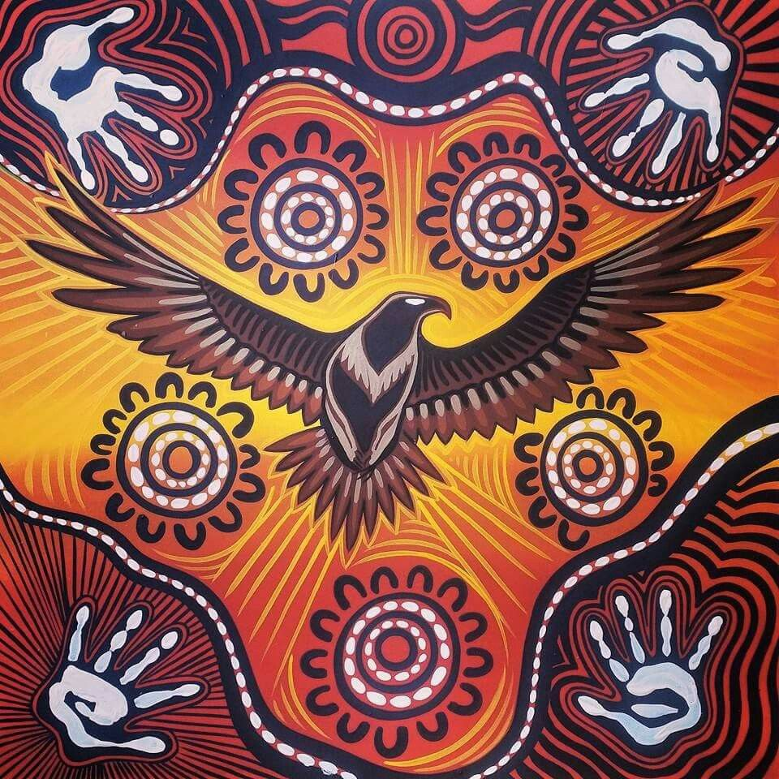

CULTURE&EDUCATION
"MINO-BIMAADIZIWIN
"MINO-BIMAADIZIWIN
Naawi-Oodena's Cultural Campus has traditional teachings with today's education.
Free language courses for all ages, from beginner to fluent speakers.
All streets and buildings feature names in both English and Anishinaabemowin.
Explore the Medicine Garden, Indigenous Art Gallery and more.
Housing Types: Single-family homes and multi-unit buildings.
Public/Cultural Spaces: Community gathering space, cultural centre, and public plaza.
Recreation: Sports fields, walking trails, and playgrounds.
Indigenous Design: Language and culture are shown through names, signs like an eagle,Turtle and art.
The eagle is a powerful symbol in Indigenous culture, representing strength, leadership, and vision.
This land was once Kapyong Barracks, a military base closed in 2004. Treaty 1 Nations fought for over 15 years to reclaim it. In 2019, they won the right to lead its future. This victory shows how First Nations can take back land and lead big projects that honor culture and people.